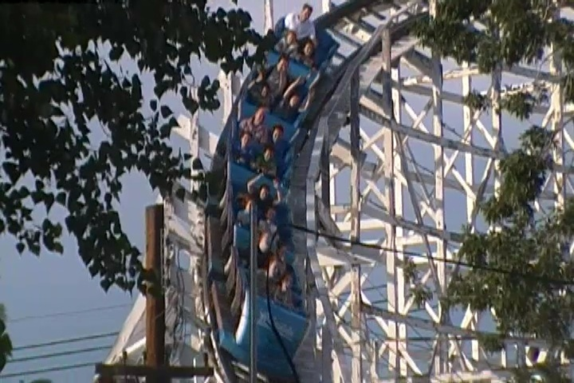
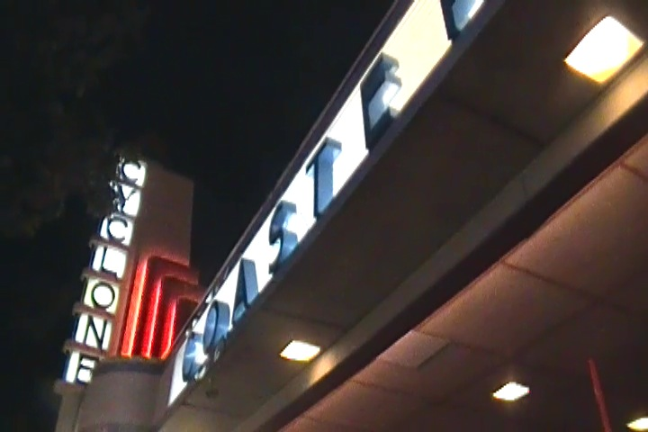
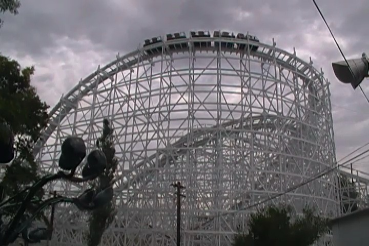
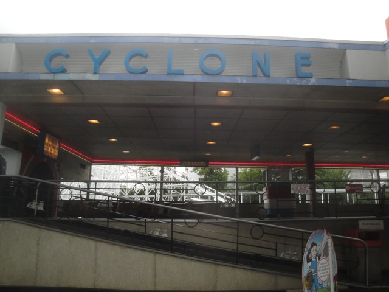
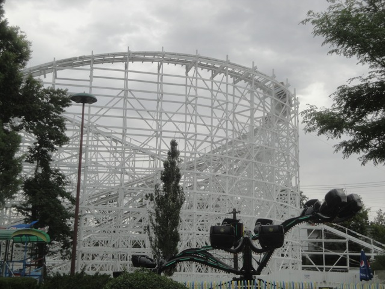

| |
Lakeside Cyclone Review

We're here at Lakeside Park. Today, we're here to review the Lakeside Cyclone, which is the big wooden coaster in the park. And yeah. Much like the rest of Lakeside Cyclone, you can tell that this ride is really old. But it's still a very fun ride. Not the best ride ever, but a very fun ride none the less. We hop in the trains, pull down the lap bar, which is very loose and essentially just a bar, and we're off. We roll out of the station and into a dark and dank tunnel. Insert joke here. But yeah. We roll around a lot of turns in the dark. I like that, and it's another one of those wooden coasters that just has a classic tunnel that lasts a while. But eventually, we head outside and begin to climb the lifthill. While climbing the lifthill, we get a good view of the streets of Denver. We reach the top of the lifthill, which ends right at the end of the street, looking out upon an intersection, and BAM!!! Down a curved drop we go!! We pick up a lot of speed and we're off to a good start. Yeah, there's a little bit of shuffling at the bottom of the first drop, but it's no big deal. And at that bottom of that first drop, we just head into a turn. So yeah, we picked up all the speed, and now we're just getting some laterals. Intersting, but hey. I like it. It's a lot of fun. We then rise up a hill, getting a nice pop of airtime at the top. WEE!!! We go around a turn, get a good view of the pretty architecture of Lakeside Park. We then have a drop, go down and through some banked turn, and up a curved hill. We get a pretty view of the Lakeside and then we can go down another curved hill, still going through some banked straight track, and then around another curved hill, right by the structure of the Lakeside Cyclone. Then we go down a curved drop, time for more laterals and then we go through a small hill. Wee!! Airtime!! That's always good. We head out and over another airtime hill. Slightly banked and slightly curved, but fun none the less. We then head up another hill, go through some straight track, and then go around a turn, and through some more straight track. And then we head down a small drop that actually gets us some airtime. Wee. We then go through two airtime hills and they are actually have some decent airtime. It's a lot of fun and definetly my favorite part of the ride. We then head up this tiny little bump up and then head around this big wide turn. This leads us to a big long stretch of straight track, down a tiny little bump, and then glide straight into the brake run. I know it's far from the best ride ever, but it is a lot of fun. It kind of reminds me of the San Diego Giant Dipper. And hey. It's much better than Twister II just across town. Definetly give it a ride when you're at Lakeside Park. It's actually a really fun ride.
7/10
Location: Lakeside Park
Opened: 1940
Built by: Edward A. Vettel
Last Ridden: July 24, 2013
Lakeside Cyclone Photos





|